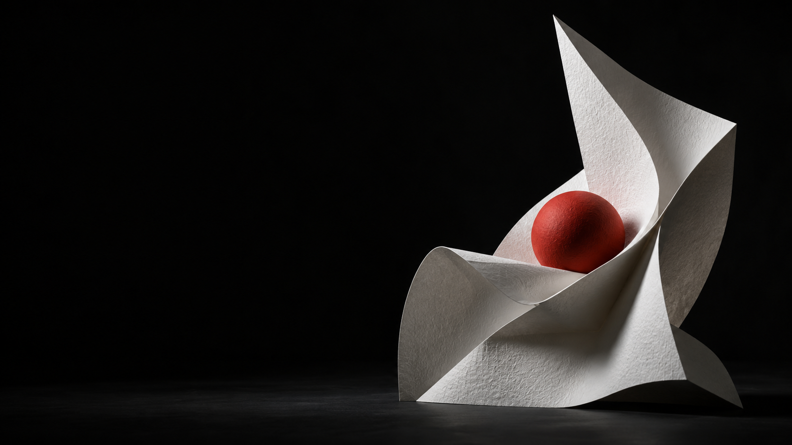
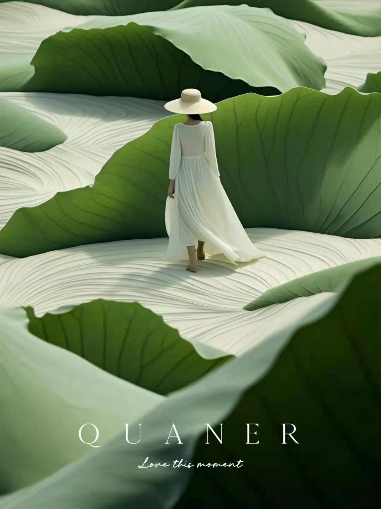
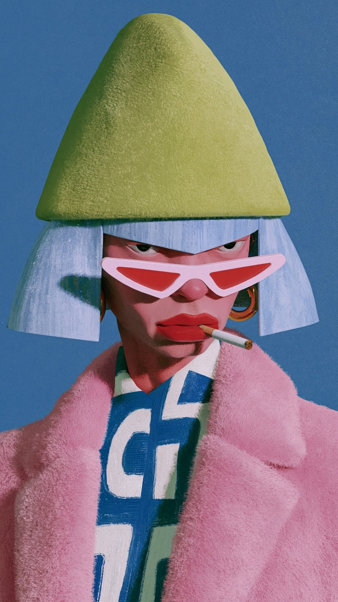

被记住
好看是起点，像你才是记忆点。同质化的美很难形成辨识度，而你的选择，应该透露你的观点。
主张 / 风格 / 辨识度

THE ART OF SEEING
从「好看」到被记住、被认同、被信任。
一次关于个人表达与内容创作的分享。
我们关注一个创作者，有时是因为他说了什么，有时是因为他带来的感觉。镜头、声音、色彩与状态，在信息之外，悄悄构成了一个人的气质。
审美，就是值得被认真对待的那一部分。
审美的价值
表达的规律
判断的尺度
可练习的方法
WHY AESTHETICS MATTERS
对于创作者与 IP 操盘手，
审美不止关乎画面。
它影响人与人之间的连接。
好看是起点，像你才是记忆点。同质化的美很难形成辨识度，而你的选择，应该透露你的观点。
你认为的高级，不一定是观众认为的高级。找到审美上的共同语言，再用更好的表达吸引同频的人。
文案传递信息，画面、声音和状态共同传递感觉。表达的一致性，是信任发生的起点之一。
让人停留，才可能产生互动。点赞、评论、收藏与分享，是观众回应内容的不同方式。
不是你不好，观众才划走。
而是你足够好，
他才可能留下。
THE GRAMMAR OF GOOD TASTE
秩序感、和谐感、独特性。
遵循规律，
不意味着大家长得一样。
虽然审美没有标准答案，但好的审美内容都有一些共同的特点。


安静的日常，可以留出呼吸；鲜活的瞬间，可以紧凑有力。音乐、剪辑与画面，共同服务你想传递的感受。
节奏没有统一快慢，关键是是否适合内容。别人拍热门景点，你可以发现街角的日常。历史、人物、光影、声音，都可以成为切入点。
独特性，来自你对世界的选择。
越复杂越好先删掉干扰主体的元素。
模板就是风格借鉴结构，保留自己的表达。
滤镜就是质感让修饰服务真实，而非盖过内容。
BEYOND LOOKING GOOD
构图有秩序，元素彼此协调。观众能快速理解重点，而不用费力寻找信息。
生命力、独特性与思想性，让内容走出流水线。自然的情绪，比刻意模仿更有感染力。
适配受众，激发共鸣或行动。在有商业目标时，也关注审美如何转化为信任与机会。
工具帮助实现，审美帮助选择。
A PRACTICE, NOT A TALENT
从「我觉得好看」，
走向「我知道为什么」。
建立自己的审美素材库，但别停在收藏。每一个参考，都试着回答三个问题。
一次只练一个变量，让变化看得见。
尝试中心或三分构图，给主体一个明确的位置。
先从三种主要颜色开始，观察颜色如何彼此呼应。
比较镜头长短，让切换服务信息与情绪。
主体是否清楚？颜色是否杂乱？节奏是否拖沓或仓促？把自己的判断与观众反馈放在一起看。
KEEP SEEING. KEEP CREATING.
多看一点，认真练一点。
让每一次选择，都更接近你自己。